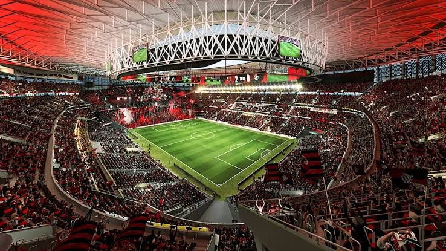

Playing away from home, Flamengo pressed until the end, seeking a draw in the Brazilian Championship.
Published: 03 August 2026

Flamengo drew 1-1 with Internacional on Wednesday night (29), at 19:30 pm, at Beira-Rio, for the 21st round of the Brazilian Championship. The team from Rio Grande do Sul took the lead with Vitinho, but Samuel Lino equalized in the final stage. With the result, Flamengo reached 39 points in the national competition.
In a match that marked Guillermo Varela's 150th game wearing the sacred jersey, Flamengo created the first opportunity after six minutes. Carrascal received a pass from Pedro, entered the area and shot low, forcing Matheus Cunha to make a great save with his feet.
Flamengo's persistence paid off in the 34th minute. After pressing high up the pitch, Arrascaeta found Pedro, whose shot was well saved by Matheus Cunha. On the rebound, the Uruguayan passed to Bruno Henrique, who was brought down just as he was about to shoot. The ball fell to Samuel Lino inside the area, who, with no goalkeeper in front of him and the goal closed off by defenders, struck firmly to find the back of the net and secure the draw: 1-1.
The goal was Samuel Lino's 13th in 70 matches for Flamengo and his ninth of the season, a mark that places him as the team's second-highest scorer in 2026. Furthermore, Flamengo also reached 37 goals and became the best attack in the Brazilian Championship so far.
Comments